Today we will begin our exploration of some classical machine learning techniques/approaches in R. We will start with clustering!
K-means clustering
Conceptually straightforward, input your data, tell them you want ‘k’ clusters, and it will give you that. Uses euclidian distances to some centroid. Iterates until it finds a good answer.
Make up some data to cluster
hist(rnorm(1000)) #1000 numbers with mean 0 (default), normal distribution. Draw a histogram to visualize this
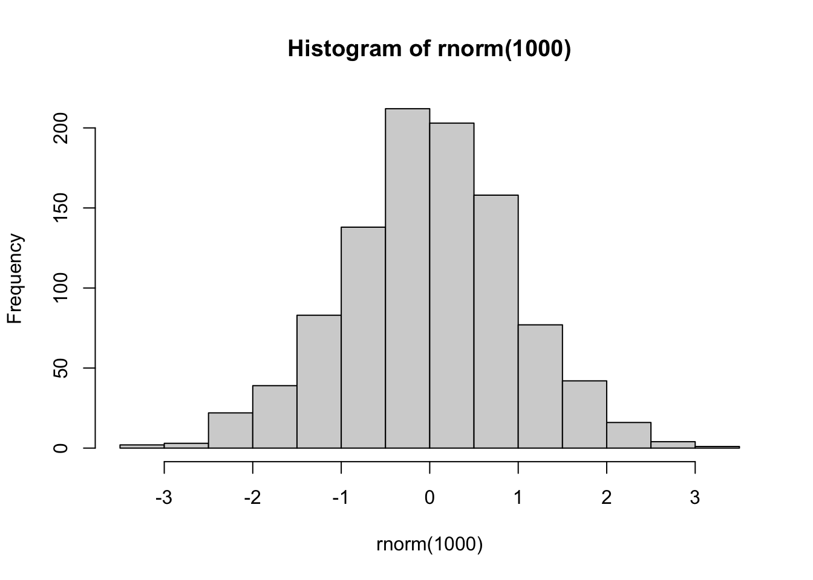
#want 30 points centered +3 to -3rnorm(30,-3) #30 points, mean -3
Q. make a plot of our data coloured by cluster assignment (a result figure)
#library(ggplot2)plot(x, col=k[["cluster"]]) #plot and colour by clusterpoints(k$centers,col="blue",pch=15) #plot the center as a square
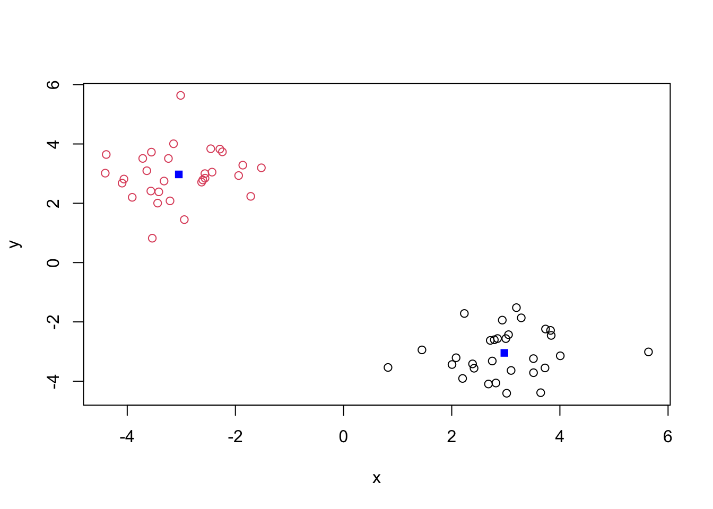
Q. ask for 4 centers this time
four<-kmeans(x, centers=4) plot(x,col=four[["cluster"]])points(four$centers,col="blue",pch=15) #plot the center as a square
Q. run Kmeans with centers (i.e. values of k) equal 1-6. I want to store tot.withinss (metric for how good the clustering is) for each value
ss<-c() #initialise tot.withinss vector before we fill it in the loopfor(i in1:6){ k_x<-kmeans(x,i) k_plot<-plot(x,col=k_x[["cluster"]])points(k_x$centers,col="blue",pch=15) ss[i]<- k_x$tot.withinss}
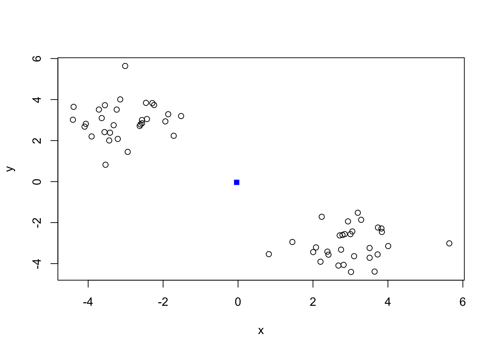
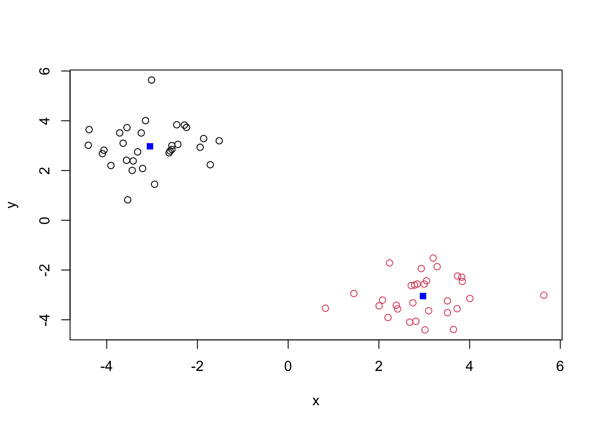
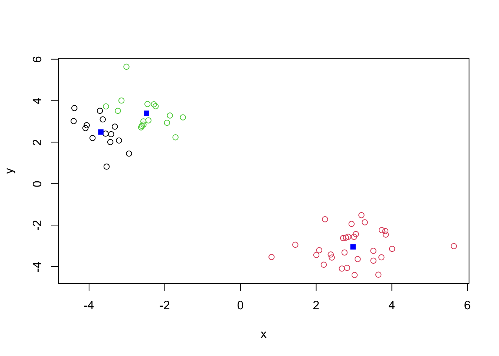
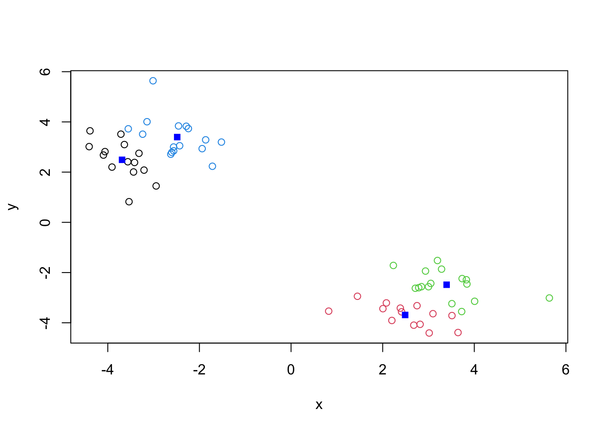
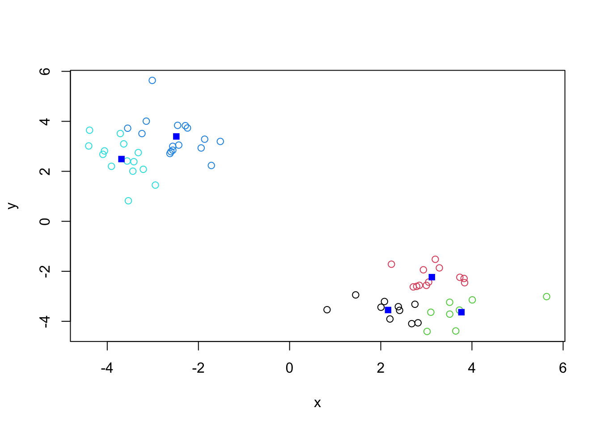
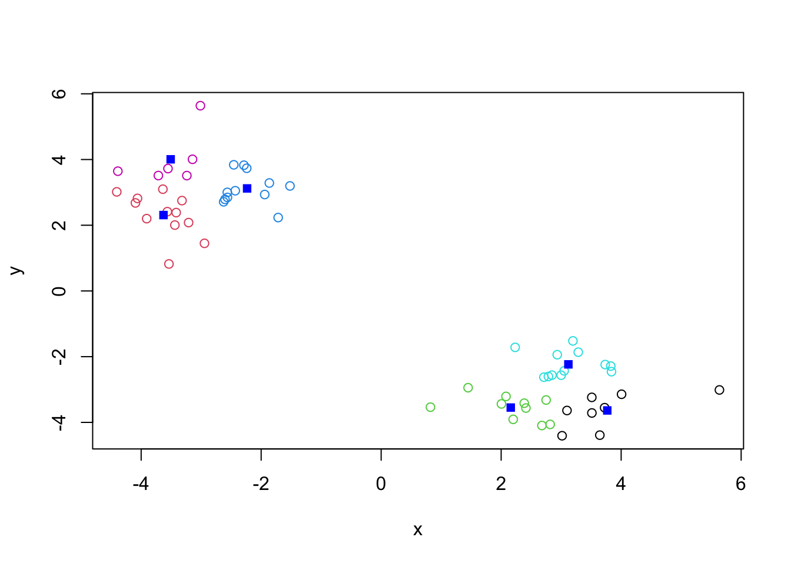
plot(ss,type="b") #tot.withinss plot
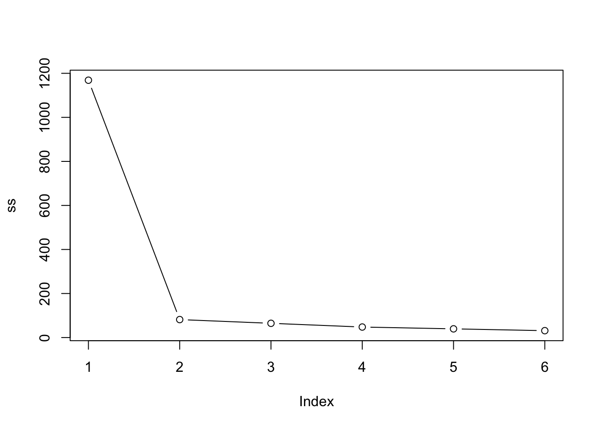
Hierarchiacal clustering
The main function in “base R” for this is called hclust()
d<-dist(x) #gives individual distances between all data pointshc<-hclust(d)hc
Call:
hclust(d = d)
Cluster method : complete
Distance : euclidean
Number of objects: 60
plot(hc) #gives us a clustering tree (dendrogram)abline(h=7, col="red")
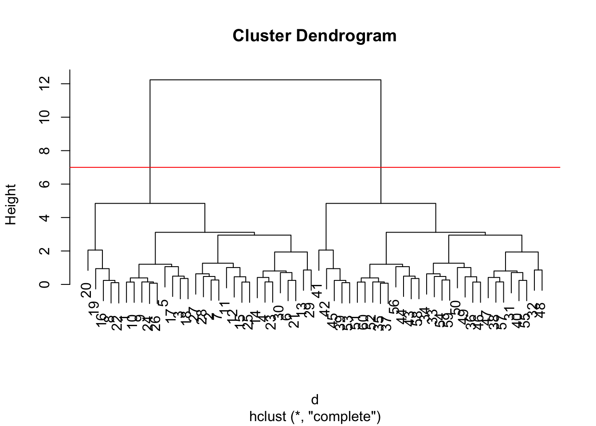
To obtain clusters from our hclust() object, the result object hc we “cut” the tree to yield different sub-branches. For this we use the cutree() function.
grps<-cutree(hc,h=7) #can specify height (cuts our tree at a certain height), this returns a clustering vectorgrps
#install.packages("pheatmap")library(pheatmap)pheatmap(x) #does the clustering for you
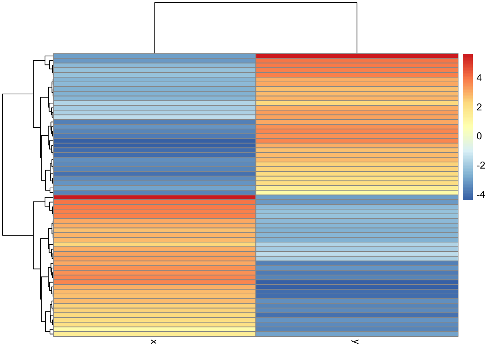
Principal component analysis (PCA)
This technique projects features on to principal components. Aim is to reduces dimensionality while only losing a small amount of information. PCs are just low dimensional axes closest to the dimensions. Condensing all your variables (dimensions) into 2. We plot PC1 vs. PC2. PC1 captures most of the componenets, PC2 usually captures the rest. We will also get subseqeunt PCs but most of our data should be captured in PC1 and 2. Data is usually more spread along PC1 than PC2.
#loading in datadata<-read.csv("UK_foods.csv")#can also read directly from website:#url <- "https://tinyurl.com/UK-foods"#x <- read.csv(url)
Q1. How many rows and columns are in your new data frame named x? What R functions could you use to answer this questions?
fix rownames so the first column is no longer considered a data column
rownames(data) <- data[,1] #assign the first column as rownames that you will add to the dfdata <- data[,-1] #remove the first column of data (repeat of rownames)head(data) #preview
##Q2. Which approach to solving the ‘row-names problem’ mentioned above do you prefer and why? Is one approach more robust than another under certain circumstances?
I would prefer to use a direct call when I read in the file, specifying row.names=1. This minimizes chance of error and makes sure you aren’t saving a version of the data that has duplicated values. For a very large data set that takes a while to load in, it may also take some time to run code to manipulate the data later to change rownames, remove a column etc.
##Q3: Changing what optional argument in the above barplot() function results in the following plot?
Change the beside argument to false.
# Using base R - starting plotbarplot(as.matrix(data), beside=T, col=rainbow(nrow(data)))
##Q4: Changing what optional argument in the above ggplot() code results in a stacked barplot figure? dodge–> stack
#sample ggplot codeggplot(data_long) +aes(x = Country, y = Consumption, fill = Food) +geom_col(position ="dodge") +theme_bw()
#changed codeggplot(data_long) +aes(x = Country, y = Consumption, fill = Food) +geom_col(position ="stack") +theme_bw()
##Q5: We can use the pairs() function to generate all pairwise plots for our countries. Can you make sense of the following code and resulting figure? What does it mean if a given point lies on the diagonal for a given plot? this plot allows you to see how each country’s food correlates with another. For example, the plot immediately to the right of the England square, we can see how the diet of England matches up to the diet of Wales. So we can see how countries match up pairwise. Along the diagonal, it would be a self-match (eg. England vs. England).
pairs(data, col=rainbow(nrow(x)), pch=16)
The pairs approach only works with smaller data sets. With larger ones, we would want to use a heatmap.
library(pheatmap)pheatmap( as.matrix(data) )
##Q6. Based on the pairs and heatmap figures, which countries cluster together and what does this suggest about their food consumption patterns? Can you easily tell what the main differences between N. Ireland and the other countries of the UK in terms of this data-set? It looks like Wales and England cluster together quite easily, seen by similar heatmap profile and pairwise correlation. Wales and N. Ireland differ the most, seen by their distance on the heatmap.
#This will be easier using PCA ##Q7. Complete the code below to generate a plot of PC1 vs PC2. The second line adds text labels over the data points.
The main function we use in “base R” for PCA is called prcomp(). We want data organised differently, as foods will need to be in the columns. So we take a transpose.
pca<-prcomp(t(data))summary(pca)
Importance of components:
PC1 PC2 PC3 PC4
Standard deviation 324.1502 212.7478 73.87622 4.189e-14
Proportion of Variance 0.6744 0.2905 0.03503 0.000e+00
Cumulative Proportion 0.6744 0.9650 1.00000 1.000e+00
Our result object is called pca - this is a list object. To get the components of the output, we use$x
pca$x #shows us where these countries lie on our new axis
cols<-c("orange","red","blue","green")ggplot(pca$x,aes(x=PC1,y=PC2,label=rownames(pca$x)))+geom_point(col=cols, size=10)+#increase size of points to see them bettertheme_bw()+geom_text()
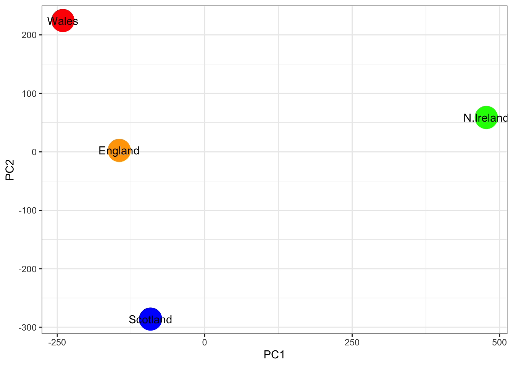
Another major result out of PCA is the so-called “variable loadings” or $rotation. This tells us how the original variables (in our case foods) contribute to the new axis.